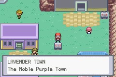
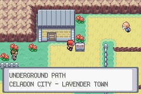

บทที่ 10 / 29
ชิออนทาวน์ <Lavender Town>
❖
ในเมืองนี้มีหอคอยโปเกมอน ซึ่งเป็นสุสานสำหรับโปเกมอนที่ตายไปแล้ว และมีบ้านที่รับเปลี่ยนชื่อเล่นโปเกมอนของเราได้ (ใครที่คิดว่าชื่อโปเกมอนเราเป็นกาลกิณี ดวงไม่ค่อยดี สามารถเปลี่ยนได้ที่นี่ 555)

ในขณะนี้เรายังไม่ต้องทำอะไร ให้เรารักษาตัวโปเกมอน แล้วเดินทางทิศตะวันตกได้เลย โดยจะผ่านถนนหมายเลข 8 ในสุดทางของถนนสายนี้ ให้เราใช้ทางใต้ดิน ซึ่งเป็นบ้านเล็กๆอยู่ด้านบน ไปยังถนนหมายเลข 7แล้วเดินต่อจนเข้าเมือง ทามามูชิซิตี้
